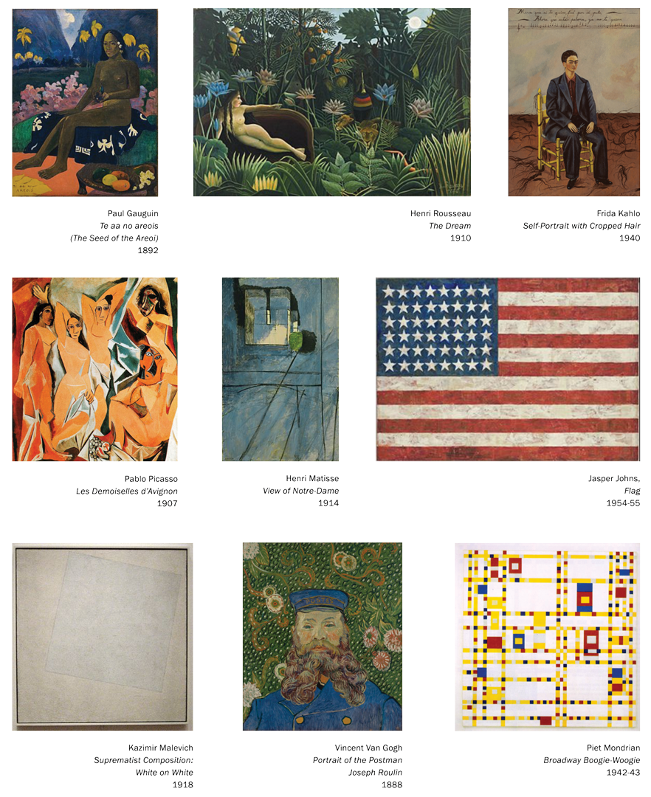

Considered by many to have the best collection of modern Western masterpieces in the world, MoMA’s holdings include more than 150,000 individual pieces in addition to approximately 22,000 films and 4 million film stills. (Access to the collection of film stills ended in 2002, and the collection is mothballed in a vault in Hamlin, Pennsylvania. It holds works by a wide range of influential European and American artists including Georges Braque, Marcel Duchamp, Walker Evans, Helen Frankenthaler, Alberto Giacometti, Arshile Gorky, Hans Hofmann, Edward Hopper, Paul Klee, Franz Kline, Willem de Kooning, Dorothea Lange, Fernand Léger, Roy Lichtenstein, Morris Louis, René Magritte, Aristide Maillol, Joan Miró, Henry Moore, Kenneth Noland, Georgia O’Keeffe, Jackson Pollock, Robert Rauschenberg, Auguste Rodin, Mark Rothko, David Smith, Frank Stella, and hundreds of others.
MoMA developed a world-renowned art photography collection first under Edward Steichen and then under Steichen’s hand-picked successor John Szarkowski, which included photos by Todd Webb. The department was founded by Beaumont Newhall in 1940. Under Szarkowski, it focused on a more traditionally modernist approach to the medium, one that emphasized documentary images and orthodox darkroom techniques.
Film
In 1932, museum founder Alfred Barr stressed the importance of introducing “the only great art form peculiar to the twentieth century” to “the American public which should appreciate good films and support them”. Museum Trustee and film producer John Hay Whitney became the first chairman of the Museum’s Film Library from 1935 to 1951. The collection Whitney assembled with the help of film curator Iris Barry was so successful that in 1937 the Academy of Motion Pictures Arts and Sciences commended the Museum with an award “for its significant work in collecting films … and for the first time making available to the public the means of studying the historical and aesthetic development of the motion picture as one of the major arts”.
The first curator and founder of the Film Library was Iris Barry, a British film critic and author, whose three decades of pioneering work in collecting films and presenting them in coherent artistic and historical contexts gained recognition for the cinema as the major new art form of our century. Barry and her successors have built a collection comprising some eight thousand titles today, concentrating on assembling an outstanding collection of the important works of international film art, with emphasis being placed on obtaining the highest-quality materials.
The exiled film scholar Siegfried Kracauer worked at the MoMA film archive on a psychological history of German film between 1941 and 1943. The result of his study, From Caligari to Hitler: A Psychological History of the German Film (1947), traces the birth of Nazism from the cinema of the Weimar Republic and helped lay the foundation of modern film criticism.
Under the Museum of Modern Art Department of Film, the film collection includes more than 25,000 titles and ranks as one of the world’s finest museum archives of international film art. The department owns prints of many familiar feature-length movies, including Citizen Kane and Vertigo, but its holdings also contains many less-traditional pieces, including Andy Warhol’s eight-hour Empire, Fred Halsted’s gay pornographic L.A. Plays Itself (screened before a capacity audience on April 23, 1974), various TV commercials, and Chris Cunningham’s music video for Björk’s All Is Full of Love.
Library
The MoMA library is located in Midtown Manhattan, with offsite storage in Long Island City, Queens. The non-circulating collection documents modern and contemporary art including painting, sculpture, prints, photography, film, performance, and architecture from 1880–present. The collection includes 300,000 books, 1,000 periodicals, and 40,000 files about artists and artistic groups. There are over 10,000 artist books in the collection. The libraries are open by appointment to all researchers. The library's catalogue is called "Dadabase". Dadabase includes records for all of the material in the library, including books, artist books, exhibition catalogue, special collections materials, and electronic resources. The Museum of Modern Art's collection of artist books includes works by Ed Ruscha, Marcel Broodthaers, Susan Bee, Carl Andre, and David Horvitz.
Additionally, the library has subscription electronic resources along with Dadabase. These include journal databases (such as JSTOR and Art Full Text), auction results indexes (ArtFact and Artnet), the ARTstor image database, and WorldCat union catalog.
Architecture and Design
MoMA's Department of Architecture and Design was founded in 1932 as the first museum department in the world dedicated to the intersection of architecture and design. The department's first director was Philip Johnson who served as curator between 1932–34 and 1946–54.
The collection consists of 28,000 works including architectural models, drawings and photographs. One of the highlights of the collection is the Mies van der Rohe Archive. It also includes works from such legendary architects and designers as Frank Lloyd Wright, Paul László, the Eameses, Isamu Noguchi, and George Nelson. The design collection contains many industrial and manufactured pieces, ranging from a self-aligning ball bearing to an entire Bell 47D1 helicopter. In 2012, the department acquired a selection of 14 video games, the basis of an intended collection of 40 that is to range from Pac-Man (1980) to Minecraft (2011).
Notable Works in MoMA’s collection
